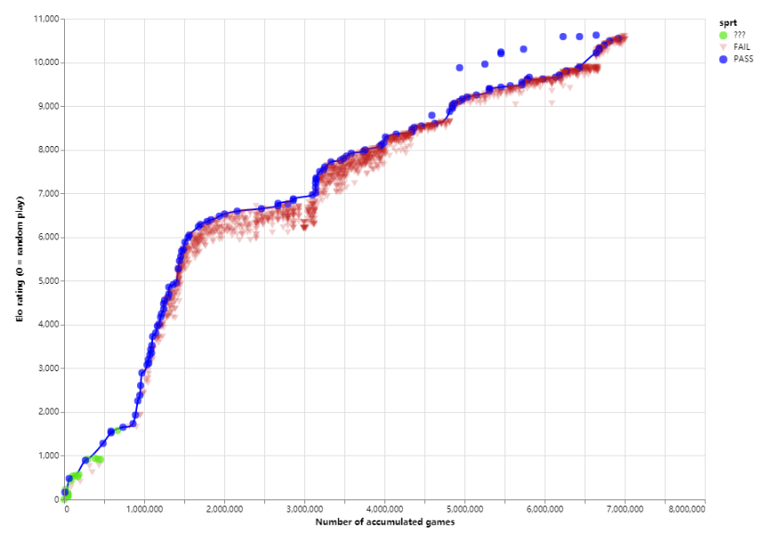

leelazero介绍
leela-zero和AlphaGo-zero一样，是使用蒙特卡洛树搜索和深度残差神经网络算法，不依赖于任何人类棋谱训练出来的围棋AI。leela-zero是AlphaGo-zero忠实的追随者。
和绝艺不一样的，leela-zero是开源免费的项目，其成果是全人类共享的。目前绝艺只提供给国家队使用，而leela-zero任何人都可以免费使用。
Zero顾名思义，就是从零开始。leela-zero需要从零开始学习围棋，通过自对弈产生棋谱训练自己，逐步成长为围棋高手。据估计，在普通的硬件设备上重新打造一个AlphaGo-zero需要1700年。
1700年太久，我现在就想要！
众人拾柴火焰高，因此leela-zero采用分布式的训练方式。世界各地的leela爱好者们可以贡献自己的电脑参与训练。其过程可概括为以下几步：
- leela志愿者者下载leela-zero训练程序autogtp
- 志愿者们分别运行训练程序，训练程序会自动让leela-zero自对弈，产生棋谱后上传服务器。
- 作者用收集到的棋谱训练出神经网络权重（权重：表征神经网络内部联系的一系列参数）
- 新出来的权重会和之前最强的权重对局，用于检验其棋力，400局中胜率超过55%的则更新为当前最强权重。
leela-zero的进步就是靠产生一个又一个更强的权重。
目前每天有600人左右在为leela-zero提供训练。在半年的时间内leela-zero已经自我对弈700万局，经历128次权重更迭。详细信息前往http://zero.sjeng.org/查看。一次权重更迭就代表leela-zero 的一次进步。虽然每个人的力量很弱小，但我们团结在一起的力量是无比巨大的。Leela-zero从牙牙学语，到如今具备职业棋手水平，参与训练的志愿者们功不可没！
我要训练leela-zero
加入训练是让leela-zero变强的唯一途径,如果你想让leela-zero更快变强，请加入到训练的队伍中。Leela-zero今后的发展，就拜托各位啦！
我要用leela-zero下棋
leela-zero还处于成长阶段，目前作者的主要精力放在提高leela-zero棋力上，因此leela-zero没有像Zen那样的图形界面。但是值得庆幸的是这是个开源项目，有leela-zero爱好者为leela量身定做了图形界面的lizzie用于分析局面。此外，github上还有其他基于GTP协议开发的独立图形界面程序，可以用于加载leela，例如sabaki和GoGui。
请各位leela-zero爱好者不要着急，虽然目前要使用leela-zero下棋还很麻烦，但是lizzie每天都在频繁的更新中，功能会越来越多，界面会对电脑盲越来越友好。甚至，以后还会有手机上可以运行leela-zero的APP出现，耐心等待就是了。
Leela作者介绍
Gian-Carlo Pascutto大家叫他gcp。是比利时的一位程序员，工作于火狐浏览器。
象棋软件Sjeng、Deep Sjeng和围棋软件Leela（老版本）都是他开发的。
- Deep sjeng参加过六界届世界计算机象棋锦标赛(World Computer Chess Championships)，在第17届锦标赛中并列第一名后退役。
- Sjeng赢得过2008年世界快速计算机国际象棋锦标赛冠军、2009年世界计算机国际象棋锦标赛冠军，以及2010和2011年的网络计算机国际象棋锦标赛。
- Leela（老版本）获得过9×9围棋的第二名和Computer Olympiad（计算机奥林匹克）19×19围棋比赛的第三名。